|
|
|
This view classifies the observations in the current sample into cells defined by the series in the group. You can display the cell counts in various forms and examine statistics for independence among the series in the group. Select View/N-Way Tabulation… which opens the tabulation dialog.Many of the settings will be familiar from our discussion of one-way tabulation in “One-Way Tabulation”.
statistics are not displayed in list mode.
To understand the options for output, consider a group with three series. Let (i, j, k) index the bin of the first, second, and third series, respectively. The number of observations in the (i, j, k)-th cell is denoted as 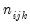 with a total of 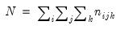 observations.
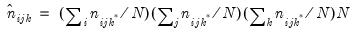
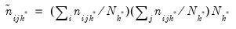 statistics for testing the independence of the series in the group. The test statistics are based on the distance between the actual cell count and the count expected under independence.
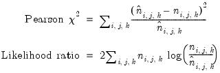
for the table, the following three measures of association are reported:
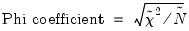
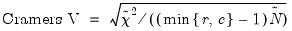
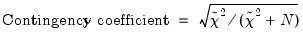
 table.
table. with 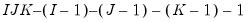 degrees of freedom where 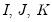 are the number of categories for each series.
with 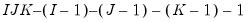 degrees of freedom where 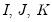 are the number of categories for each series. categories, respectively. Note the WARNING message: if there are many cells with expected value less than 5, the small sample distribution of the test statistic under the null hypothesis may deviate considerably from the asymptotic
categories, respectively. Note the WARNING message: if there are many cells with expected value less than 5, the small sample distribution of the test statistic under the null hypothesis may deviate considerably from the asymptotic  distribution.
distribution. or column categories
or column categories  of the table, and 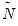 is the number of observations in the table. Note that all three measures are bounded between 0 and 1, a higher number indicating a stronger relation between the two series in the table. While the correlation coefficient only measures the linear association between two series, these nonparametric measures are robust to departures from linearity.
of the table, and 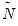 is the number of observations in the table. Note that all three measures are bounded between 0 and 1, a higher number indicating a stronger relation between the two series in the table. While the correlation coefficient only measures the linear association between two series, these nonparametric measures are robust to departures from linearity.